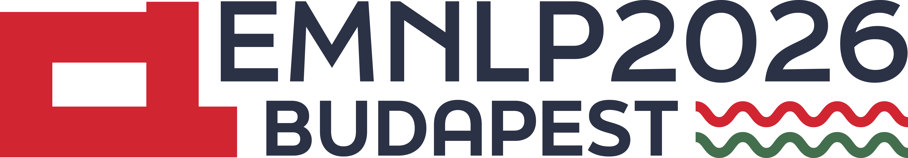

Jen-Tse (Jay) Huang 黃任澤
My first name sounds like: Yen-ZuhEmail: jhuan236@jh.edu
| Google Scholar | Linkedin |
| Semantic Scholar | GitHub |
| WoS | ORCID | DBLP | CV |
I am a Postdoc in the Center for Language and Speech Processing (CLSP) at Johns Hopkins University (JHU), working with Prof. Mark Dredze (Director, JHU DSAI Institute). I also work closely with Prof. Maarten Sap at CMU LTI.
I obtained my Ph.D. in Computer Science and Engineering at the Chinese University of Hong Kong (CUHK) in 2024, advised by Prof. Michael R. Lyu (IEEE Life Fellow, ACM Fellow, AAAS Fellow).
I obtained my B.Sc. in Computer Science at Peking University (PKU) in 2019. I was a student in Yuanpei College, where students can choose any majors and take any courses from the entire university. This chance made me able to enjoy the knowledge in not only computer science, but also psychology, sociology, economics, and philosophy, motivating my research shown below.
Research Interests
News
- [Aug. 2026] One paper is accepted to EMNLP'26 main conference!
- [Aug. 2026] One paper is accepted to TMLR!
- [Jul. 2026] Our 1st IAB Workshop will be held at NeurIPS'26!
- [Jul. 2026] One paper is accepted to COLM'26!
- [May. 2026] One paper is accepted to KDD'26!
- [Apr. 2026] One paper is accepted to ICML'26!
- [Apr. 2026] Seven papers are accepted to ACL'26! Four to main conference; Three to findings.
- [Jan. 2026] One paper is accepted to ICLR'26!
- [Nov. 2025] Selected as one of the KAUST Rising Stars in AI 2026!
- [Oct. 2025] Our 1st PersonaLLM Workshop will be held at NeurIPS'25!
- [Sep. 2025] Two papers are accepted to NeurIPS'25!
- [Aug. 2025] Five papers are accepted to EMNLP'25! Four to main conference; One to findings.
Talks
- [May 26 2026] "Alignment of the Undesired and Misalignment of the Desired," at University of Massachusetts, Lowell, MA, hosted by Prof. Hong Yu.
- [Apr 3 2026] "On the Failure of Latent State Persistence in Large Language Models," as NLP seminar series of Johns Hopkins University Center for Language and Speech Processing, Baltimore, MD. [News]
- [Feb 11 2026] "Evaluating Human-AI Alignment Inspired by Cognitive & Psychological Science," at King Abdullah University of Science and Technology, Thuwal, Saudi Arabia. [News]
- [Nov 8 2025] "LLMs Do Not Have Human-Like Working Memories," keynote speech at the Ninth WiNLP Workshop@EMNLP2025, Suzhou. [News]
- [May 1 2025] "LLMs Do Not Have Human-Like Working Memories," at University of Southern California, Virtually. [News]
- [Apr 28 2025] "LLMs Do Not Have Human-Like Working Memories," at National University of Singapore, Singapore, hosted by Dr. Zhaomin Wu.
- [Apr 3 2024] "On the Humanity of Large Language Models," at Shanghai Jiaotong University, Shanghai, hosted by Prof. Rui Wang.
- [Apr 2 2024] "On the Humanity of Large Language Models," at Fudan University, Shanghai. [News (Chinese)]
- [Mar 6 2024] Youth PhD Talk-ICLR 2024, AI TIME, Virtually. [News (Chinese)]
Teaching

Teaching Assistant of ENGG2440A: Discrete Math for Engineers, 2020
Services
AREA CHAIR
 2026
2026

 2027, 2026, 20252025, 2024 Top Reviewer
2027, 2026, 20252025, 2024 Top Reviewer 2026 Silver Reviewer, 2025
2026 Silver Reviewer, 2025

 Outstanding Reviewer
Outstanding Reviewer


Contact
Room NE353, JHU MTW North Campus
6225 Smith Avenue
Baltimore, Maryland 21209, USA
Website design: ✩